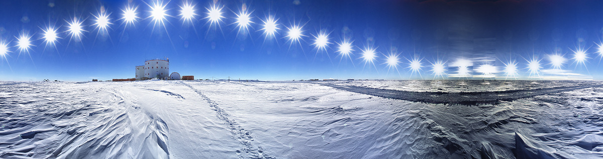
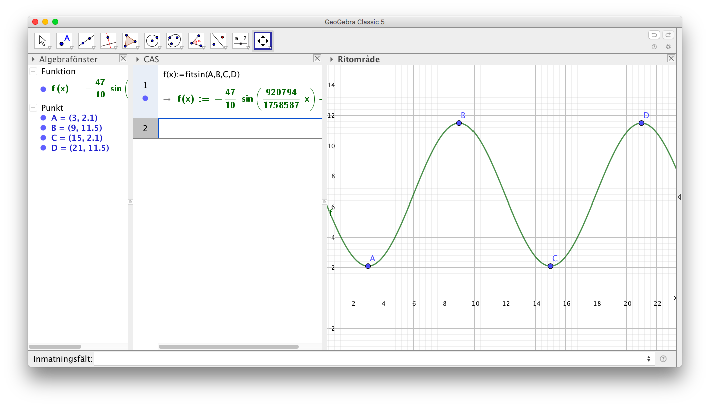

14. Periodiska fenomen
Video där en tyngd hänger i en fjäder och vi plottar läget som funktion av tiden.
Som det sista för kursen skall vi se på periodiska fenomen, fenomen som upprepar sig själv. Periodiska fenomen kan man modellera med hjälp av trigonometriska funktioner, speciellt sinus och cosinus.
Exempel 1 Saltströmmen i Norge beror på tidsvattnet. Strömmen upprepar sig var 6 timme. Höjdskillnaden mellan ebb och flod är 1 m. Bestäm funktionen som ger höjden för vattnet.
Exempel 2 På bilden ser du solens läge varje timme från Concordia, Antarktis.
- Bestäm en funktion som beskriver solens rörelse.
- När är förändringen i solens bana som störst?

Uppgifter
- Uppgift där vi repeterar funktioner
Lösningen
Mont-Saint-Michel, i norra Frankrike, är ett gammalt kloster som är belägt på en ö i Engelska kanalen. Då det är Lågvatten, ebb, kan man gå till ön medan då det är högvatten, flod, måste man ta båt över.
Under en vecka i mars är vattennivån för ebb (lågvatten) ca 2,1 m och för flod (högvatten) ca 11,5 m. Dygnets första ebb är kl 3 och ebb och flod varierar med 6 timmars mellanrum.
- Bestäm den funktion som beskriver vattennivån.
Något i stil med

- Vad är vattennivån 3 timmar efter ebb?
\( f(6) \) i funktionen ger 6,8 m.
- När är förändringen av vattennivån som störst? Hur stor är den då?
Kommandot \( \text{nLös}(f''(x)=0) \) ger x=0 och x=6. Klockan 0 och 6 är förändringen störst. Förendringen får vi genom att sätta in 0 och 6 i derivatafunktionen, \( f'(0)= -2,46 \) och \( f'(6)=2,46 \). Enheten är meter/timme.
Exakta värden för ebb och flod hittar du på Windsurfer.com
- Bestäm den funktion som beskriver vattennivån.
- Uppgift med höjden på ett pariserhjul.
Lösningen
- Temperaturen en vårdag i Helsingfors anges med funktionen \( f(t)=6,5 -3,5\sin(\frac{\pi\cdot t}{12}) \), där t är timmar räknat från midnatt.
- Ange den högsta och lägsta temperaturen under dygnet.
Vi kan lösa den på två sätt:
- Eftersom sinus får värden mellan -1 och 1 rör sig värdena mellan \( 6,5-3,5(-1) = 10 \) och \( 6,5-3,5\cdot 1 = 3 \).
- Vi deriverar funktionen och söker största och minsta värden.
- Hur snabbt stiger eller sjunker temperaturen kl 20.00?
Vi söker derivatans värde i punkten 20. Räknaren ger -0,46 o/h.
- När är temperaturförändringen möjligast stor?
Vi söker förändringen för derivatan, andra derivatans nollställen. Räknaren ger 0, 12 och 24. Värdena är \( f'(0)=f'(24)=-0,92; f'(12)=0,92 \).
- Ange den högsta och lägsta temperaturen under dygnet.
- Konjukturcyklar, se https://sv.wikipedia.org/wiki/Kategori:Konjunkturcykler.
Lösningen
- Uppgift med fjäder som far upp och ner. Bestämma högsta hastigheten och accelerationen.
Lösningen